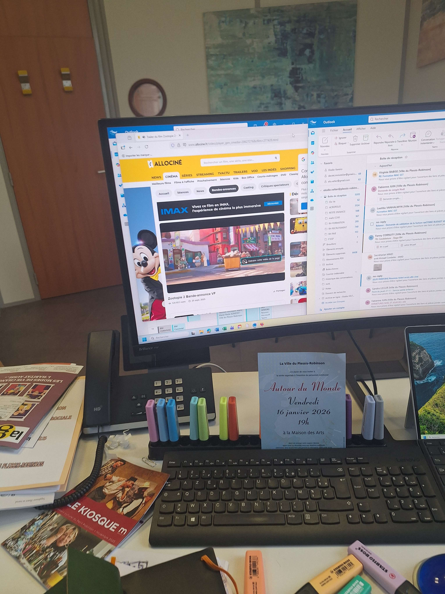
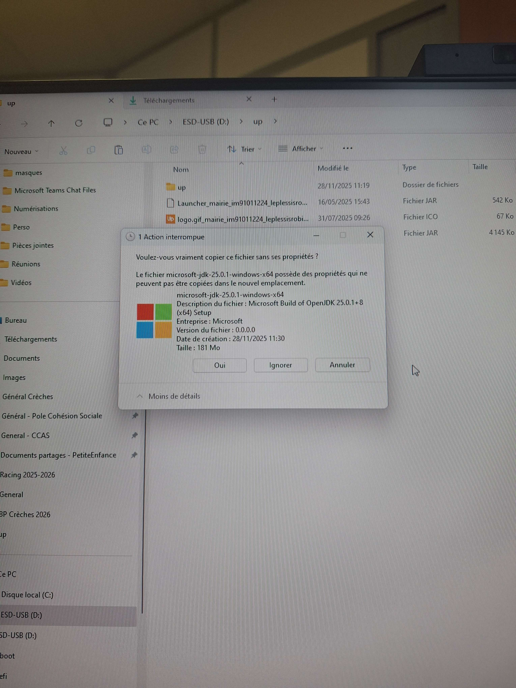

Mes Stages Professionnels
Durant ma formation BTS SIO option SISR, j'ai effectué mes stages au sein du service informatique de la Mairie du Plessis-Robinson. Cette expérience professionnelle m'a permis de développer mes compétences techniques et de découvrir le métier de technicien informatique dans le secteur public.
Mairie du Plessis-Robinson
Service Informatique
Présentation de la ville
Le Plessis-Robinson est une commune dynamique des Hauts-de-Seine (92350 ) située en Île-de-France, à quelques kilomètres au sud de Paris. Avec une population de près de 29 000 habitants (les Robinsonnais et Robinsonnaises), la ville se distingue par son équilibre entre tradition et innovation, et son engagement en matière de développement durable.
Membre de la Métropole du Grand Paris, Le Plessis-Robinson est administré par le maire Jacques Perrin et son conseil municipal de 33 conseillers. La commune dispose d'infrastructures modernes et de nombreux services publics destinés à améliorer le quotidien de ses habitants.
Le service informatique
Le service informatique de la Mairie du Plessis-Robinson assure la gestion et la maintenance de l'ensemble du parc informatique municipal. Il intervient sur plusieurs sites :
- L'Hôtel de Ville : Administration centrale avec les services municipaux
- Les établissements scolaires : 12 écoles primaires, 2 collèges et 1 lycée
- Les équipements culturels : Médiathèque Jean d'Ormesson, théâtre
- Les services publics : Services municipaux répartis sur le territoire (police municipale, Centre Municipal de Santé)
Missions du service informatique
Support utilisateur
Assistance téléphonique et sur site pour les agents municipaux et enseignants
Maintenance
Gestion du parc informatique et des équipements (PC, écrans, téléphones, switches)
Infrastructure réseau
Administration des serveurs, Active Directory et équipements réseau
Sécurité
Mise en place de solutions de sécurité (YubiKey, authentification multi-facteurs)
Déploiement
Installation et configuration de postes de travail conformes aux normes municipales
Gestion des incidents
Suivi et traitement des tickets via le système GLPI
Quelques chiffres
Mes Réalisations Professionnelles
Durant mes deux stages, j'ai participé à diverses missions couvrant l'ensemble des compétences d'un technicien informatique.
Gérer le patrimoine informatique
Gestion et suivi du parc informatique de la mairie : inventaire, configuration et déploiement des équipements.
Stage de première année (2024)
-
Installation Windows 11 sur PC portables et fixes :
Mise à disposition de postes de travail prêts à l'emploi pour les agents municipaux. Installation de Windows 11 via clé USB bootable, conformément à la procédure définie par la mairie. Et rajout dans GLPI. Installation de logiciels métier (suite Office, messagerie, applications spécifiques), configuration des imprimantes.


-
Manutention de moniteurs et PC portables :
Réception, vérification et préparation du matériel informatique neuf. Étiquetage avec numéros d'inventaire et enregistrement dans la base GLPI.

-
Gestion de l'inventaire :
Mise à jour de la base GLPI avec les équipements, les mouvements (affectations, mutations).

-
Installation de moniteurs et de PC fixes, imprimante :
Installation physique dans les bureaux des agents municipaux. Câblage réseau, configuration des imprimantes et tests de bon fonctionnement.


Stage de deuxième année (2025-2026)
-
Déploiement et configuration d'un switch :
Installation d'un switch réseau pour étendre la connectivité dans un bâtiment municipal. Configuration des VLANs, et intégration dans l'architecture réseau existante.


-
Manutention et configuration de téléphones :
Préparation de téléphones hors du domaine pour les élections municipales, ainsi que configuration de téléphones fixes.

Compétences mobilisées :
Répondre aux incidents et aux demandes d'assistance
Support utilisateur et résolution d'incidents techniques pour assurer la continuité de service.
Stage de première année (2024)
-
Helpdesk :
Réception des appels téléphoniques et tickets des agents municipaux et enseignants en difficulté. Diagnostic initial par téléphone, guidage pour les manipulations simples ou intervention sur site.
 
-
Surveillance et réponse aux tickets GLPI :
Consultation régulière de la file d'attente GLPI, priorisation des incidents selon l'urgence. Résolution des problèmes matériels et logiciels. Mise à jour des tickets avec les actions effectuées.

Stage de deuxième année (2025-2026)
-
Installation de bureaux (moniteur, ordinateur, branchement) :
Installation complète de postes de travail pour les nouveaux agents. Déballage, installation physique, câblage et configuration logicielle.
1.jpg)
2.jpg)
-
Intervention dans les écoles pour les problèmes de moniteurs et PC :
Déplacements dans les établissements scolaires pour résoudre les incidents techniques. Diagnostic, réparation ou remplacement du matériel.

Compétences mobilisées :
Mettre à disposition des utilisateurs un service informatique
Déploiement et mise à disposition de services et équipements informatiques opérationnels.
Stage de deuxième année (2025-2026)
-
Déploiement d'un logiciel dans chaque poste d'une école :
Installation d'un logiciel éducatif sur l'ensemble des postes d'un établissement scolaire (environ 20 ordinateurs).

Compétences mobilisées :
Développer la présence en ligne de l'organisation
Aucune mission spécifique n'a été réalisée dans ce domaine durant mes stages à la mairie.
Mes réalisations dans ce domaine se concentrent sur des projets personnels : développement de mon portfolio professionnel et gestion de ma présence LinkedIn.